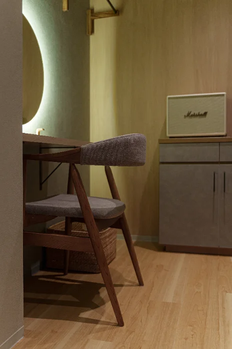
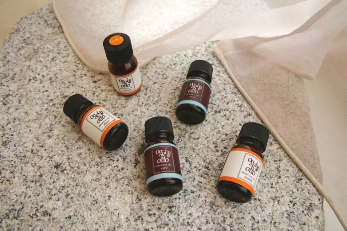
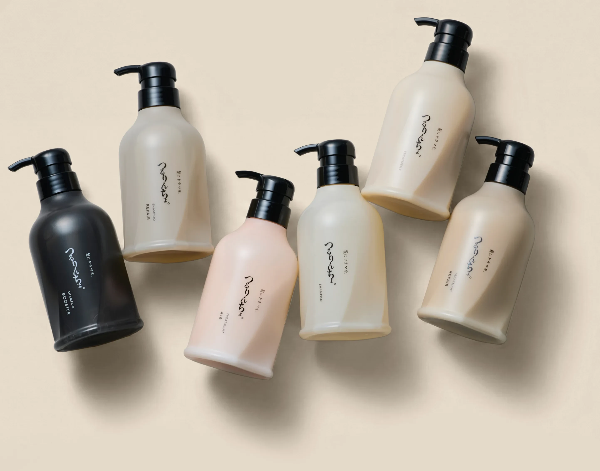

ちゃんと、休めていますか？
眠っても疲れが取れない。
なんだか気分が落ちつかない。
スマホを閉じても、気づけばまたひらいている。
「モットガンバッテイルヒトゲイル」
「大丈夫、まだいける。」
そう思って、自分の疲れに鈍感になっていませんか？
ヘッドスパは、
ただ頭皮をマッサージするだけ
のものではありません。
表情のこわばり。
止まらない思考。
緊張した神経。
それらが、ゆっくりとほぐれていく。
頭をゆるゆると、呼吸が深くなる。
呼吸が変わると、心がやわらかくなる。
"ちゃんと休めた"
と感じられる時間が訪れるのです。
ヒトトイロのヘッドスパでしか味わえない感覚。
← スワイプできます →
ヒトトイロのヘッドスパは、ただ優しいだけではありません。強すぎて翌日に疲れが残るような刺激は避けつつ、必要なポイントにはきちんと届く"ほどよい力加減"を大切にしています。
眠れるくらい気持ちいいのに、終わったあとは頭も体も軽い——そんな声を多くいただくのは、この力加減へのこだわりがあるからです。

ヒトトイロは線路沿いにありますが、防音加工された個室に入ると外の音は消え、驚くほど静かな空間になります。さらに音楽家監修の"周波数ヒーリング"を導入し、呼吸や心拍に寄り添いながら自然界のゆらぎを再現しました。BGMではなく施術の一部として、これまでにない深いリラックスへと導きます。
やわらかな灯りが、心までそっと落ち着かせてくれる空間。強すぎない照明が視界をやさしく包み、安心感を生み出します。施術がはじまると、さらに光を落とし、眠りに入りやすい暗さへ。視覚からも深いリラックスへと導いていきます。

香りも施術の一部として大切にしています。空間に広がるのは、深く息を吸いたくなるようなアロマの香り。ただ"いい香り"ではなく、呼吸をゆるめ、心を落ち着かせるために選び抜いたアロマオイルです。その日の体調や気分によって感じ方は変わりますが、「またここに来たい」と思える余韻を残してくれます。
※アロマオイルの選択は120分コース以上です。
心も体も深くゆるんだあとのひとときには、特別な「食べるハーブティー」をご用意しています。香りを楽しみながら口に含めば、やさしい味わいが体の奥へと染みわたり、スパでほどけた感覚をそのまま内側から支えてくれます。余韻を感じながらゆっくりと味わうその時間が、現実に戻る前の贅沢な仕上げとなります。

系列店 RuCOR. / umily by RuCOR. で愛用されている美髪アイテムを、ヒトトイロでも導入しました。頭をほどく時間のはずが、仕上がりは思わず触りたくなる"サラツヤ髪"。セルフドライでも、すぐにその違いを実感していただけます。
この体験を予約する
ヒトトイロでは「その日のあなたの身長」に合わせて、圧の強さ、リズム、お湯の温度まで調整しています。
大切なのは、"どんな手"でふれられるか。
ヒトトイロの手は、「やさしく整えようとする手」ではなく、
「そのままのあなたを受けとめる手」。
髪をゆっくりととのえながら、頭の奥にたまっていたノイズを、ひとつずつほどいていく。
それが、ヒトトイロのヘッドスパです。
眠っても疲れが取れない…そんな毎日に変化を。
口コミが語る体験を、ぜひあなた自身で感じてください。
A. 頭皮ケアだけでなく、思考・自律神経・呼吸へもやさしく作用します。
A. ほとんどの方が寝落ちされます。それが一番自然な反応です。
A. 「疲れないため」に通われる方も多くいらっしゃいます。ヒトトイロでは"疲れの予防"にヘッドスパという考えでもあります。
2125年 9/14 open
最新情報は、Instagramをフォローしてご確認ください。
LINEからご予約やお問い合わせが可能です。
※当店はすべて個室での施術となっておりますため、お電話に出られない場合がございます。恐れ入りますが、お問い合わせはLINEでのご連絡をおすすめしております。
最後に、ここまでお読みいただきありがとうございました。
あえて5つの"違和感"を入れさせていただきました。
言葉のズレ、変な表現、ほんの少しのノイズ。
もし、気づかなかったとしたら──
あなた、ちょっとお疲れなのかもしれません。
そんな時は、無理せず。
「そろそろ、ヒトトイロ行こうかな」って、思い出していただけたら嬉しいです。
よし、ヒトトイロに行こう。
—— 正解はここ ——
モットガンバッテイルヒトゲイル → もっと頑張っている人がいる
頭をゆるゆると → 頭をゆるめると
!聴覚! → 【聴覚】
あなたの身長に合わせて → あなたの体調に合わせて
2125年 9/14 open → 2025年 9/14 open
【向ヶ丘遊園駅】北口をでて右に向かって頂き踏切を渡ります。左側の横断歩道を渡って頂いたビルの５Fです♪
【登戸駅】からは生田緑地口より右に向かい、線路沿いを歩いて真っすぐ進み、踏切の手前の横断歩道の前のビル５Fです。
【ビルの目印】赤い看板の 恵の家、どんと 様が入ったビル５F右の扉です。